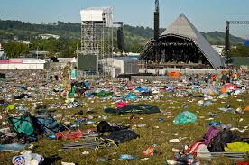
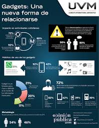
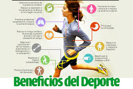
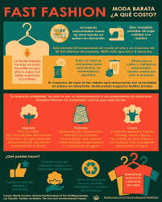
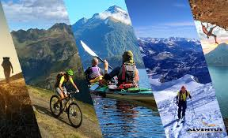
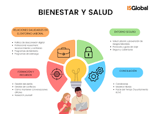

"MI MEXICO DIGITAL: Una guia interactiva para adolescentes"
- Musica y Conciertos
¿Cómo influye la música en el desarrollo personal? La música puede tener un impacto significativo en el desarrollo personal de las personas por diversas razones. Puede fortalecer el aprendizaje y la memoria, regular las hormonas que provocan el estrés y evocar experiencias, sensaciones y recuerdos

- Tecnologia y gadgets
La tecnología y los gadgets pueden tener impactos positivos y negativos en la sociedad

- Redes sociales y influencers
Los adolescentes pueden imitar los comportamientos de los influencers.
Los influencers pueden generar una sensación de inferioridad en los jóvenes.
- Deportes y fitness
Los accidentes, mala forma al ejercitarse o el uso de ropa y equipo inadecuado pueden ser algunas de las causas. Algunas personas se lastiman porque no están en forma. La falta de calentamiento o estirar los músculos también puede causar lesiones.

- Peliculas y Series de TV
Las series tienen un impacto social toda vez que son productos mediáticos (culturales) con altos índices de consumo. Los personajes de la ficción son portadores promotores de las valoraciones sociales que permean en una época determinada.
Una serie de televisión es una obra de carácter audiovisual y generalmente narrativa que se difunde por televisión, en entregas periódicas, manteniendo cada una de ellas una unidad y continuidad argumental o al menos temática (serie de antología) con los episodios anteriores y posteriores
- Videojuegos
Son software o juegos electrónicos
Se intera ctúa con ellos mediante un controlador, teclado, joystick o dispositivo sensor de movimiento
Generan retroalimentación visual en un dispositivo de visualización
Permiten simular experiencias en la pantalla
Los videojuegos son juegos electrónicos que se pueden jugar en una computadora, televisor o otro dispositivo electrónico. El uso excesivo de videojuegos puede tener consecuencias negativas en la salud física y mental
- Moda y Estilo
La industria de la moda es una de las más contaminante del mundo hacia el medio ambiente, puesto que produce emisiones de carbono que pueden ocasionar cambio climático y calentamiento global
La moda no sólo es fugaz; además disfruta de serlo, por características propias es efímera, por el contrario, el estilo propone eternidad, y se extiende en un tiempo que permite la insistencia de esas características en un modo de hacer y ver, configurándose en sí mismo por esa complejidad.

- Viajes y Aventuras
El turismo de aventura es un tipo de turismo que involucra actividades al aire libre, deportes y experiencias emocionantes y desafiantes. Estas actividades pueden incluir senderismo, escalada, rafting, paracaidismo, buceo y muchas más.
Incompatibilidad con otras actividades,
Inflación
Especulación
Estacionalidad laboral
Distorsiones en la economía local
Excesiva dependencia de la actividad turística

- Libros y Lectura
Dislexia: Trastorno de la lectoescritura
Disgrafía: Trastorno de la lectoescritura
Disortografía: Trastorno de la lectoescritura
Alexia: Trastorno de la lectura que se presenta después de una lesión cerebral
Hiperlexia: Trastorno en el que las personas tienen habilidades de lectura avanzadas pero tienen problemas para comprender lo que leen
- Salud mental y Bienestar
La salud y el bienestar son conceptos relacionados con el estilo de vida y la calidad de vida de las personas. La salud mental y el bienestar emocional son aspectos importantes de la salud y el bienestar.
